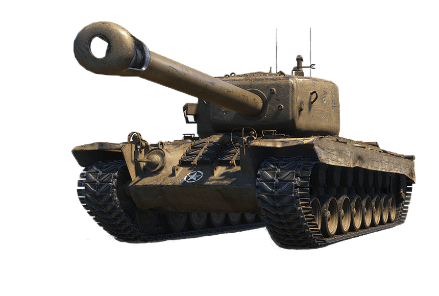

Présentation de l'État-major :
hussard9 :
Fondateur de notre très cher clan, c'est une personne calme qui ne cherche pas les ennuis et au contraire souhaiterait que tout le monde s'entende bien. Il éclaire notre chemin avec sa lanterne, tel un berger guidant son troupeau et sait utiliser son aura bienfaitrice quand des désaccords ont lieu.
Albator44 :
Considéré comme le bras droit de notre chef, par sa présence il instaure le respect et anime les conversations lors de nos soirées endiablées. Il est également très ouvert d'esprit et à l'écoute des autres, c'est un peu comme notre psychologue quand quelque chose ne va pas.
Big_Bros :
Un des membres fondateurs, la diplomatie fait partie de ses (nombreuses) qualités, sans être un robinet d'eau tiède. Il accepte carte bleue et chèques, mais vous pouvez négocier en bières et par moment il se transforme en stratège et "essaie" de diriger son armée.
Dorninator :
Il est l'incarnation même du dicton "il faut se méfier de l'eau qui dort". Fort sympathique et posé, c'est une véritable force douce. Faisant partie des meilleurs joueurs de notre clan, il saura vous conseiller si le doute occupe votre esprit et peut aussi vous donner des astuces pour vous améliorer.
xxjujux54 :
Jeune recrue rescapé d'un clan parti en discorde, il est un peu directif quand il s'agit des bastions ou tout autre mode compétitif, le reste du temps il aime rigoler et s'amuser. Il sait garder son sang-froid dans les moments difficiles et faits en sorte de toujours aller chercher la victoire.
